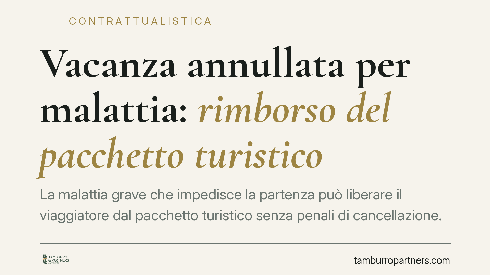

Vacanza annullata per malattia: rimborso del pacchetto turistico
La malattia grave che impedisce la partenza può liberare il viaggiatore dal pacchetto turistico senza penali di cancellazione. La disciplina è però più articolata di quanto si creda: va letta anzitutto nel Codice del Turismo, e solo in via residuale nelle regole generali del codice civile. Chiariamo quando il rimborso è dovuto e come documentare l'impedimento.

Il quadro: Codice del Turismo prima di tutto
Quando si parla di pacchetti turistici, la base normativa primaria non è il codice civile generale, ma una disciplina speciale: il Codice del Turismo (D.Lgs. 23 maggio 2011, n. 79). È questa la *lex specialis*, cioè la legge dedicata che prevale sulle regole generali.
L'art. 41 del Codice del Turismo disciplina il recesso del viaggiatore prima dell'inizio del pacchetto. La regola base (comma 1) consente di recedere in qualsiasi momento, ma di norma dietro pagamento di spese di recesso ragionevoli, cioè le cosiddette penali di cancellazione.
Il comma 5 introduce però un'eccezione rilevante: in presenza di circostanze inevitabili e straordinarie che si verificano nel luogo di destinazione o nelle immediate vicinanze e incidono in modo sostanziale sull'esecuzione del pacchetto, il viaggiatore ha diritto al rimborso integrale, senza corrispondere alcuna penale.
Malattia del viaggiatore: recesso o impossibilità?
Qui occorre una distinzione tecnica, perché la malattia del viaggiatore non rientra automaticamente nelle "circostanze straordinarie" dell'art. 41, comma 5, che la giurisprudenza riferisce tipicamente a eventi legati alla destinazione (crisi sanitarie nel luogo di arrivo, instabilità, calamità).
Quando l'impedimento riguarda la sfera personale del viaggiatore, si apre un secondo piano di analisi. Non è corretto parlare sic et simpliciter di impossibilità sopravvenuta della prestazione ex art. 1463 c.c.: la prestazione del tour operator — organizzare ed erogare il viaggio — resta in sé possibile. Ciò che viene meno è la possibilità di utilizzare quella prestazione e la realizzabilità della finalità turistica, cioè la causa concreta del contratto.
Su questo si è formato un consolidato filone della Cassazione in tema di "finalità turistica" del contratto di viaggio, che valorizza lo scopo di svago e riposo come elemento causale rilevante. In questa cornice, un impedimento oggettivo, grave e non imputabile al viaggiatore può condurre allo scioglimento del vincolo e al diritto alla restituzione, da verificare caso per caso.
> Nota di prudenza: eventuali pronunce di legittimità con numero e anno non verificati non vengono qui citate. Su un tema patrimoniale la regola operativa va ancorata al testo normativo e al quadro giurisprudenziale consolidato, non a riferimenti incerti.
Implicazioni pratiche per il viaggiatore
La differenza tra le due ipotesi non è teorica, perché incide direttamente sul portafoglio.
Un recesso volontario — cambio di programma, ripensamento, esigenze soggettive non qualificate — comporta di regola il pagamento delle penali previste dal contratto, spesso crescenti all'avvicinarsi della partenza.
Un impedimento oggettivo e non imputabile, documentato in modo adeguato, è invece il presupposto per discutere un rimborso senza penali o, in alternativa, per attivare la copertura assicurativa.
Il punto decisivo è quasi sempre probatorio. Non basta un malessere generico: serve una patologia grave, che renda la partenza controindicata o impossibile, attestata da certificazione medica idonea, specifica e datata. Un certificato vago o successivo indebolisce la posizione del viaggiatore.
Il ruolo della polizza annullamento
Molti pacchetti includono o propongono una polizza annullamento viaggio. È uno strumento distinto dal diritto al rimborso contrattuale: copre, nei limiti e con le franchigie di polizza, proprio ipotesi come la malattia del viaggiatore o di un familiare.
Attenzione ai termini: le polizze impongono quasi sempre la denuncia del sinistro entro un numero ridotto di giorni dall'evento (spesso pochi giorni lavorativi). Un ritardo può far decadere dalla garanzia. Verificare le condizioni specifiche della propria polizza è quindi il primo passo, non l'ultimo.
Cosa fare in concreto
- Raccogliete subito la documentazione medica: certificato con diagnosi, data, indicazione della controindicazione o impossibilità alla partenza. La tempestività è decisiva.
- Comunicate per iscritto e senza ritardo al tour operator o all'agenzia, tramite PEC o raccomandata A/R, allegando la documentazione e chiedendo espressamente il rimborso senza penali.
- Attivate la polizza annullamento entro i termini di polizza (spesso pochi giorni): leggete le condizioni, individuate la finestra di denuncia e inviate la richiesta nei tempi.
- Conservate contratto, condizioni generali, ricevute di pagamento e corrispondenza: sono la base di qualsiasi successiva contestazione o azione.
- Diffidate formalmente il professionista in caso di rifiuto o silenzio, prima di valutare la via giudiziale o la mediazione obbligatoria eventualmente prevista.
Consigliamo di muovervi con rapidità: in questa materia i termini brevi, soprattutto assicurativi, sono spesso la vera discriminante tra tutela e perdita del diritto.
---
*Contributo informativo a cura di Tamburro & Partners — Avv. Giuseppe Tamburro. Non costituisce parere legale.*
Ogni contratto ha il suo equilibrio.
Se vuoi una revisione delle clausole o una redazione su misura, scrivi allo studio. Ti rispondiamo entro un giorno lavorativo.